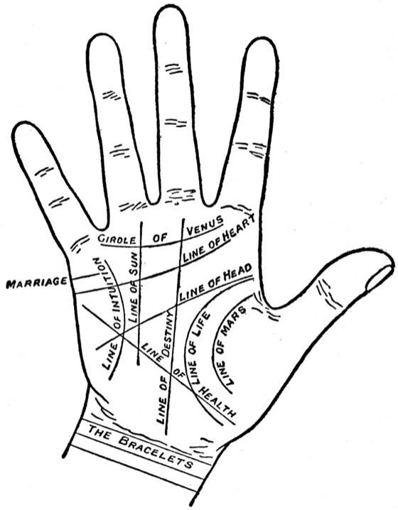

|
For a lot of us, the first half of life goes to love.
To a husband. To the children. To parents who got old.
Then one quiet day, a new question shows up. What about me?
There’s an old palm book with an answer for that. You might not like it.
It’s called Palmistry for All. It came out in New York in 1916. The man who wrote it went by one name, Cheiro. He was one of the best-known palm readers of his day.

“The Lines of the Hand,” from Cheiro’s Palmistry for All, 1916.
Scan: Project Gutenberg (public domain)
His book is full of hands like this one, with every line named.
One line mattered to him a lot: the Line of Sun. He also called it “the Line of Success.” It runs up the palm toward the ring finger.
Where it starts, he said, tells you how and when success comes.
If it rises from the Line of Head, the line of the mind, success comes “from the mental efforts and qualities, but not until after the middle of life is past.”
In plain words: from your own mind. Just later.
His Line of Fate says the same. Everything comes “late in life and only then by his own brains.”
He wrote “his.” I’ll say hers.
But one short Sun Line, all alone under the ring finger, got this:
“…happiness and success, but so late in life as to make it hardly worth having.”
Hardly worth having!
Cheiro was about 50 when that book came out. Past the middle of life himself. I do hope he never checked his own hand.
I don’t agree with him. Here’s why.
He said: late success is “hardly worth having.” I say: late is often when you finally know what you want it for.
He said: it comes “by his own brains.” I say: by hers. And she’s been using them for years. Running a home. Stretching a budget. Reading every mood in the room.
What’s late in your life isn’t missed. It’s next.
Go on, look at your own hand. Everyone does.
But here’s the thing about that book. It gives the same sentence to every hand with the same crease. A woman of 30 and a woman of 70.
It can’t know what you’ve been carrying. Or what you’d do with your turn.
And I’ll be honest. I can’t see your hand, through an email or a chat. I won’t pretend to.
What I can do is listen to you, and read what’s going on for you right now.
You don’t need a plan. You don’t even need to know what “it” is yet. It might be love again. It might be work, a move, or an old dream.
Just tell me what you want for yourself. Even if you’ve never said it out loud.
Evelyn, I’m ready to talk about what’s next for me →
If you’ve spent years being the one everyone leans on, wanting something just for you can feel selfish.
It isn’t. A lot of us were never asked what we wanted. So after a while, we stopped asking ourselves.
That question coming back now doesn’t mean you missed your chance. It means you’re listening again.
Never talked with me before? Your first 3 minutes are on the house.
You’ve waited your turn for a long time. This one’s yours.
Tell Evelyn what’s next for me →
— Evelyn
P.S. “Hardly worth having.” Cheiro wrote that about success that comes late in life. I think he got that one wrong. Tell me what you want next, and let’s look at it together. Start here.
|